Cardiología
Hemodinamia, cateterismo y angioplastia con stent.
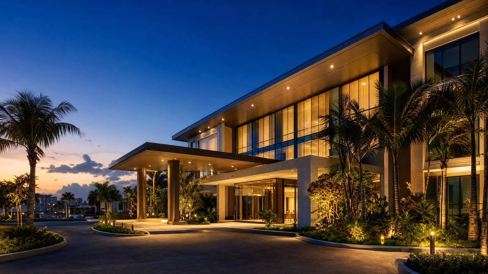
Una sola tarifa cubre el procedimiento, los tiquetes, el hotel, los traslados y los controles posteriores.
Operamos nuestra propia plataforma hospitalaria en Barranquilla. Los cirujanos, los quirófanos y la coordinación del viaje dependen de la misma organización, así que nadie te devuelve a otra ventanilla.
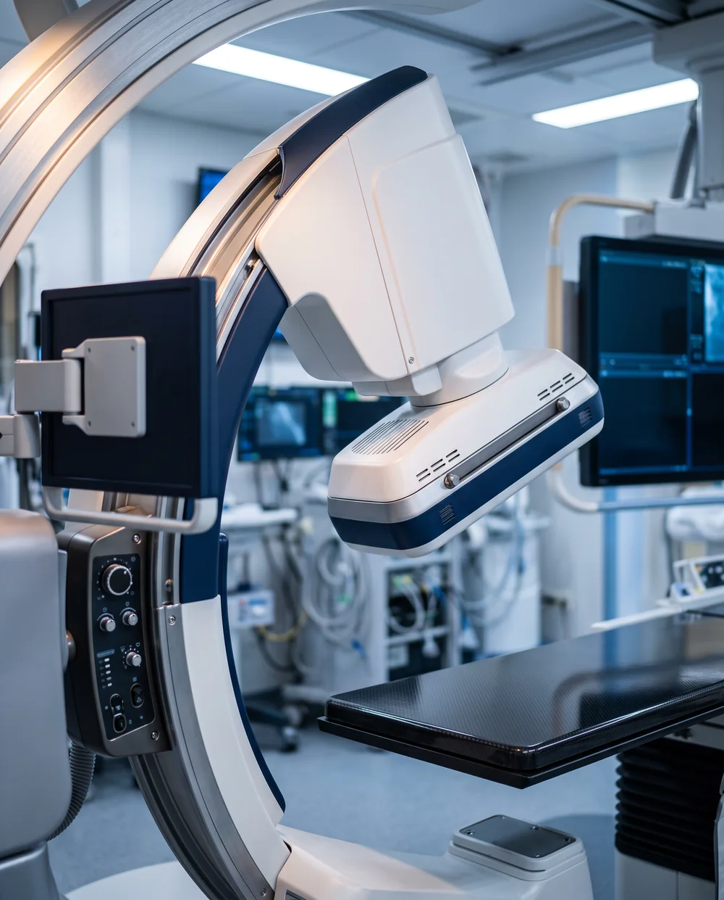
Especialidades
Programamos jornadas quirúrgicas para pacientes internacionales: tu fecha no queda sujeta a la agenda de un tercero.
Hemodinamia, cateterismo y angioplastia con stent.
Lipoescultura, mamoplastia, rinoplastia y contorno corporal.
Reconstrucción mamaria, cirugía de mano y secuelas de quemaduras.
Reemplazos articulares, artroscopia y cirugía de columna.
Fertilización in vitro, ICSI y genética humana.
Cefaleas, epilepsia y enfermedad cerebrovascular.
Biopsias, cirugía dermatológica y lesiones cutáneas.
Cirugía estética masculina y faloplastia de aumento.
Equipo médico
Especialistas formados en Colombia, México, Argentina, Brasil, Canadá y Estados Unidos. Conoces a tu cirujano antes de viajar.
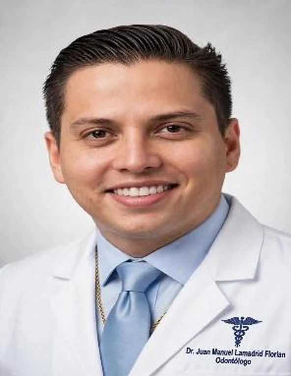
Odontología estética
Sonrisa sin Límites · Barranquilla
Odontólogo colombiano dedicado a la rehabilitación oral de pacientes internacionales, con una práctica que integra salud, función y estética. Su filosofía, «La Sonrisa Sin Límites», parte de una idea: recuperar la sonrisa también devuelve confianza.
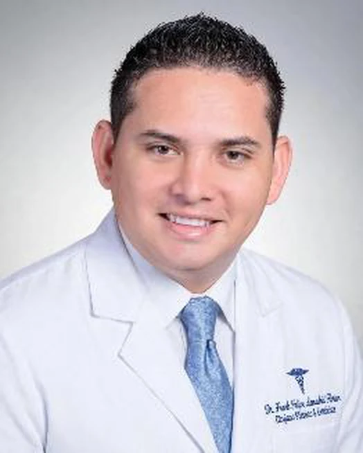
Cirugía plástica y estética corporal
Lipoescultura láser y marcación abdominal 4K
Cirujano plástico certificado por la American Society of Plastic Surgeons y por el Consejo Regional de Medicina de São Paulo. Desarrollador de la técnica 4K en lipoescultura, con maestrías en Cirugía Estética y en Medicina Antienvejecimiento.
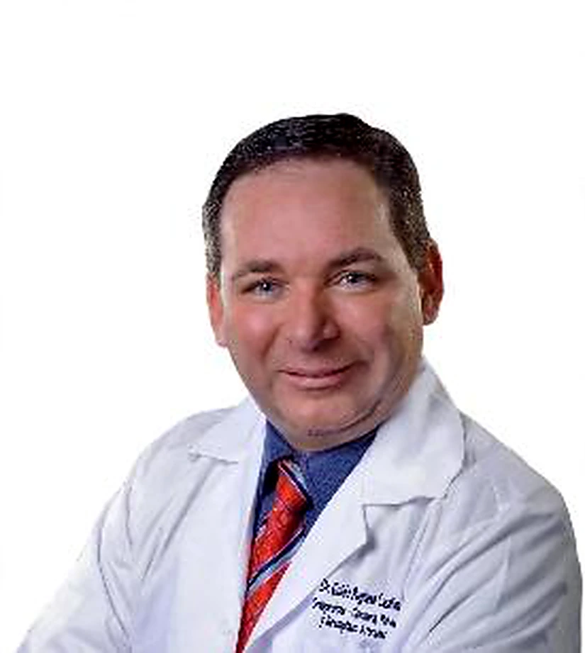
Ortopedia y cirugía de columna vertebral
Clínica Porto Azul
Ortopedista traumatólogo con subespecialidad en Cirugía de Columna Vertebral en el Instituto Mexicano del Seguro Social y fellowship en espina dorsal avalado por la Universidad McGill de Montreal.
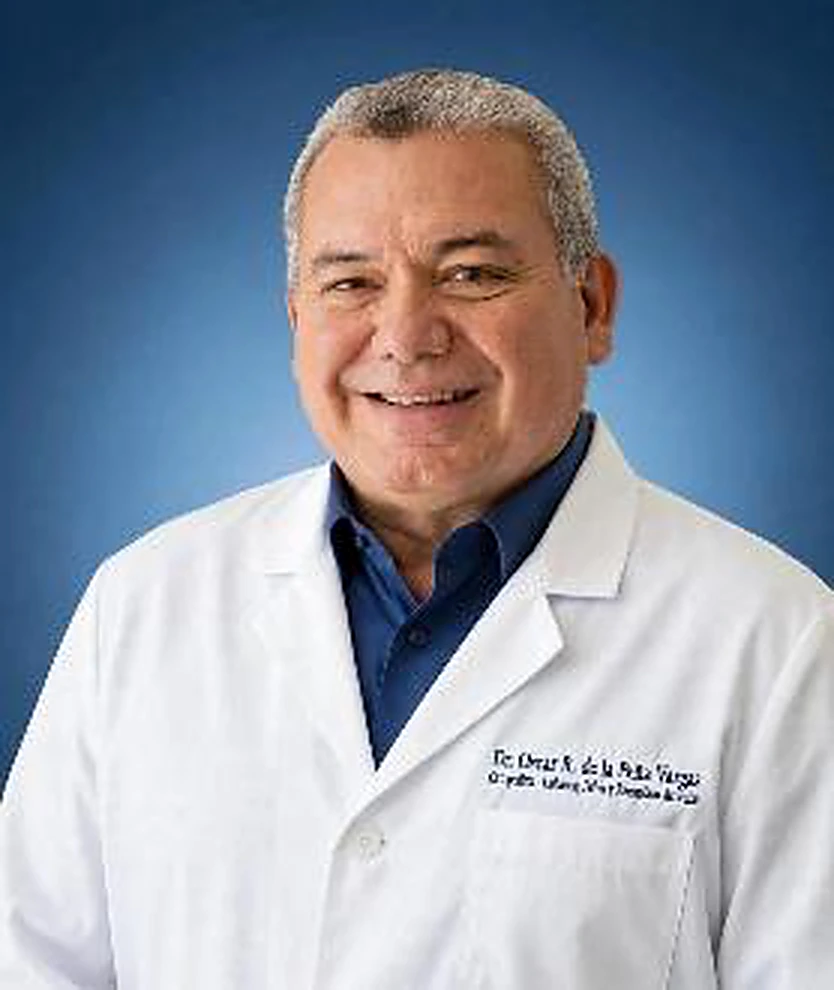
Ortopedia, columna y reemplazos articulares
Clínica Porto Azul
Cirujano de columna y corrección de escoliosis, con experiencia en cirugías complejas de cadera y pelvis y en deformidades óseas. Especialista en reemplazos articulares de rodilla, cadera y hombro.
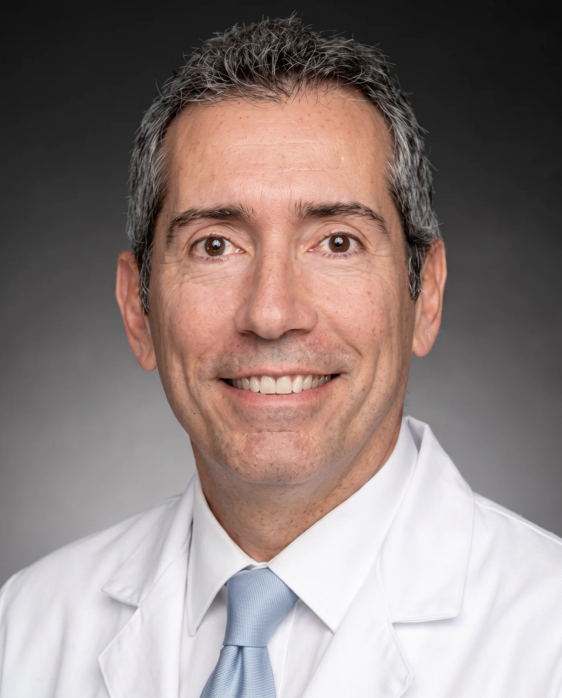
Oftalmología y cirugía refractiva
Clínica Carriazo
Referente internacional en cirugía refractiva. Desarrolló el Microqueratomo Pendular, la Queratoplastia Lamelar con Láser y el Corneal Remodeling: técnicas nacidas en Barranquilla que hoy se aplican en clínicas de todo el mundo.
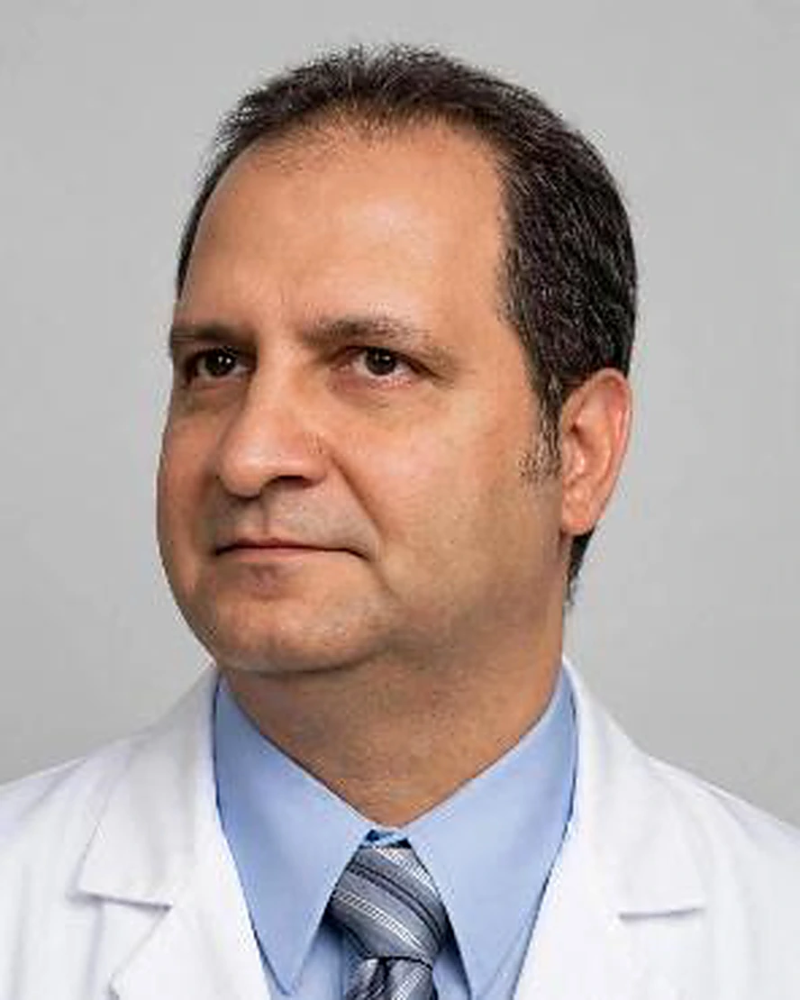
Neurocirugía y neurocirugía endovascular
Clínica Internacional La Misericordia
Neurocirujano por la Universidad de Buenos Aires, con formación en neurocirugía endovascular en la Clínica Sagrada Familia de Buenos Aires. Autor de publicaciones en revistas científicas internacionales.
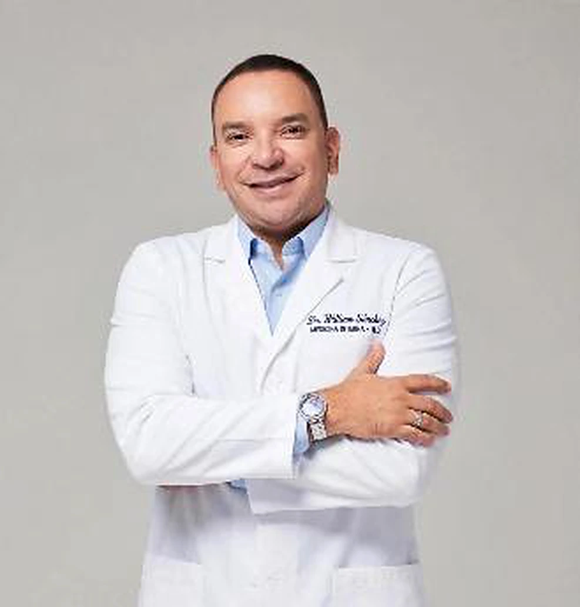
Medicina interna
Chequeo ejecutivo y medicina integrativa
Internista con más de dieciséis años de ejercicio, docencia universitaria e investigación. Dirige el chequeo ejecutivo anual y los programas de medicina integrativa del grupo.
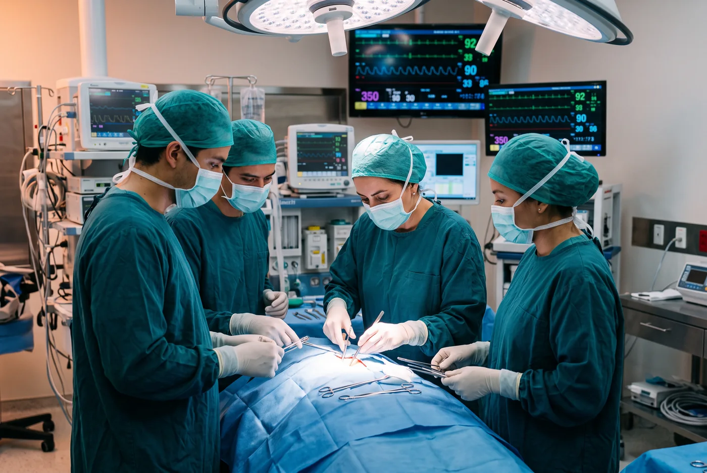
Nuestros especialistas operan en clínicas de alta complejidad de Barranquilla. Según tu procedimiento, te asignamos la sede y el equipo que corresponden a tu caso.
Ortopedia, cirugía de columna vertebral y reemplazos articulares.
Neurocirugía y procedimientos de alta complejidad.
Operación asistencial del grupo, con quirófanos y hospitalización en una misma sede.
Envías tu caso, nuestros especialistas lo estudian y recibes plan y presupuesto.
Coordinamos tiquetes, hotel y traslados. Te recibimos en el aeropuerto.
Tu cirugía en la Clínica La Asunción, con el mismo equipo de principio a fin.
Suite de recuperación, controles presenciales y teleconsulta al volver a casa.
A tres horas de vuelo desde Miami, con aeropuerto internacional y clima estable todo el año.
Tu tarifa cubre el procedimiento y toda la logística del viaje.
Ida y vuelta desde tu ciudad de origen.
Para ti y tu acompañante, cerca de la clínica.
Aeropuerto, hotel y clínica, siempre coordinados.
Una persona asignada a ti durante toda la estadía.
Cobertura médica posterior al procedimiento.
Seguimiento presencial y a distancia al volver.
Programa anual
Para quienes prefieren tener su salud resuelta durante todo el año, con un equipo que ya conoce su historia.
Cupos limitados por año. Condiciones y tarifas a solicitud.
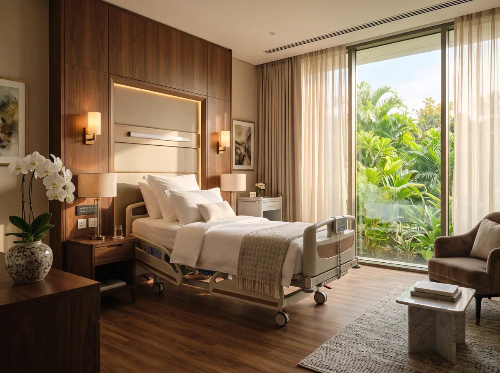
Lo que más nos consultan antes de viajar.
Escríbenos por WhatsApp o llámanos. Te pediremos información básica de tu caso (historia, fotos o exámenes según el procedimiento) y nuestros especialistas la evalúan a distancia. Recibes un plan con presupuesto en menos de 24 horas hábiles.
Depende del procedimiento: la mayoría de nuestros pacientes permanece entre 6 y 10 días. Tu cirujano define el tiempo exacto en el plan de valoración, incluyendo los controles antes del regreso.
El procedimiento completo (honorarios, quirófano, insumos y hospitalización) más la logística del viaje: tiquetes aéreos, hotel, traslados privados, concierge bilingüe, póliza de complicaciones y controles posteriores.
Sí, y lo recomendamos. El hotel y los traslados del paquete están pensados para ti y un acompañante.
Tu equipo médico hace seguimiento por teleconsulta y permaneces cubierto por la póliza de complicaciones según el plan contratado. Siempre tendrás un canal directo con tu coordinador.
Contacto
Escríbenos o llámanos. Un coordinador médico te responde en menos de 24 horas hábiles.